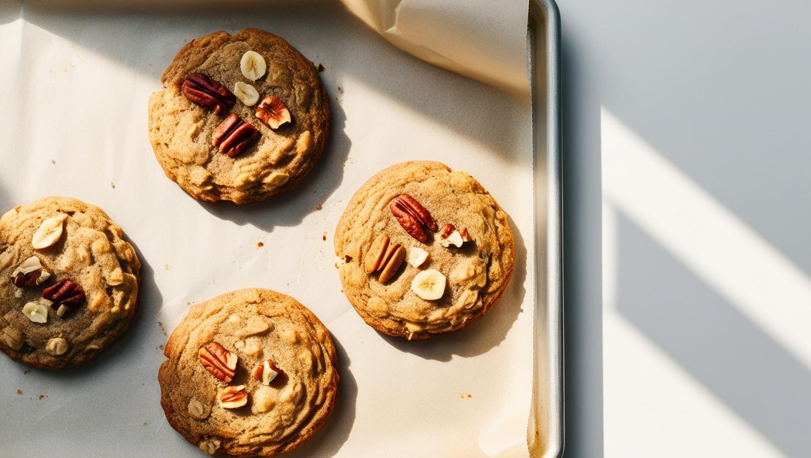

ПП-млинці з бананом
Інгредієнти:- • 1 стиглий банан
- • 2 яйця
- • 2 ст. л. вівсяного борошна (або перемелені пластівці)
- • Щіпка кориці (за бажанням)
- • Кокосова олія для смаження
- 1. Розім’яти банан виделкою.
- 2. Додати яйця та борошно, добре перемішати.
- 3. На сковороді з антипригарним покриттям (змащеній олією) обсмажити маленькі млинці з обох боків до золотистої скоринки.
- 4. Подавати з йогуртом, медом або ягодами.

Бананове печиво з вівсянкою
Інгредієнти:- • 2 стиглі банани
- • 1 склянка вівсяних пластівців
- • Жменя родзинок або горіхів
- • Кориця — за смаком
- 1. Розім’яти банани, змішати з вівсянкою та начинкою.
- 2. Сформувати печиво, викласти на деко.
- 3. Випікати при 180°C 15–20 хв.
Йогуртовий чізкейк без випічки
Інгредієнти:- • 200 г грецького йогурту
- • 150 г м’якого сиру (наприклад, маскарпоне або рікота)
- • 1 ст. л. меду
- • 2 ч. л. желатину
- • Ягоди — для прикраси
- • Основу можна зробити з вівсяного печива та кокосової олії
- 1. Залити желатин 50 мл води, дати набрякнути.
- 2. Змішати сир, йогурт, мед.
- 3. Розчинити желатин та влити в масу.
- 4. Залити у форму, охолоджувати 3+ год.
- 5. Прикрасити ягодами.
Фінікові цукерки в кокосі
Інгредієнти:- • 10 фініків без кісточок
- • 2 ст. л. какао
- • Жменя горіхів
- • Кокосова стружка — для обкачування
- 1. Подрібнити фініки і горіхи в блендері.
- 2. Додати какао, сформувати кульки.
- 3. Обкачати в кокосі.
- 4. Зберігати в холодильнику.
Морозиво з банану та ягід (Nice Cream)
Інгредієнти:- • 2 стиглі банани (заморожені шматочками)
- • Жменя заморожених ягід
- • Трохи кокосового або мигдального молока
- 1. Подрібнити все у блендері до стану морозива.
- 2. Подавати відразу, прикрасити ягодами або горішками.